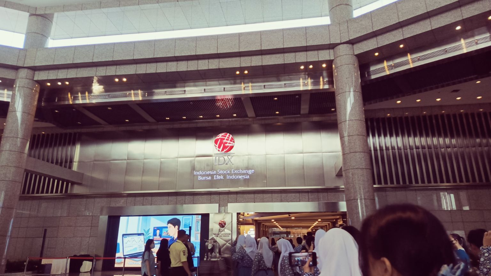
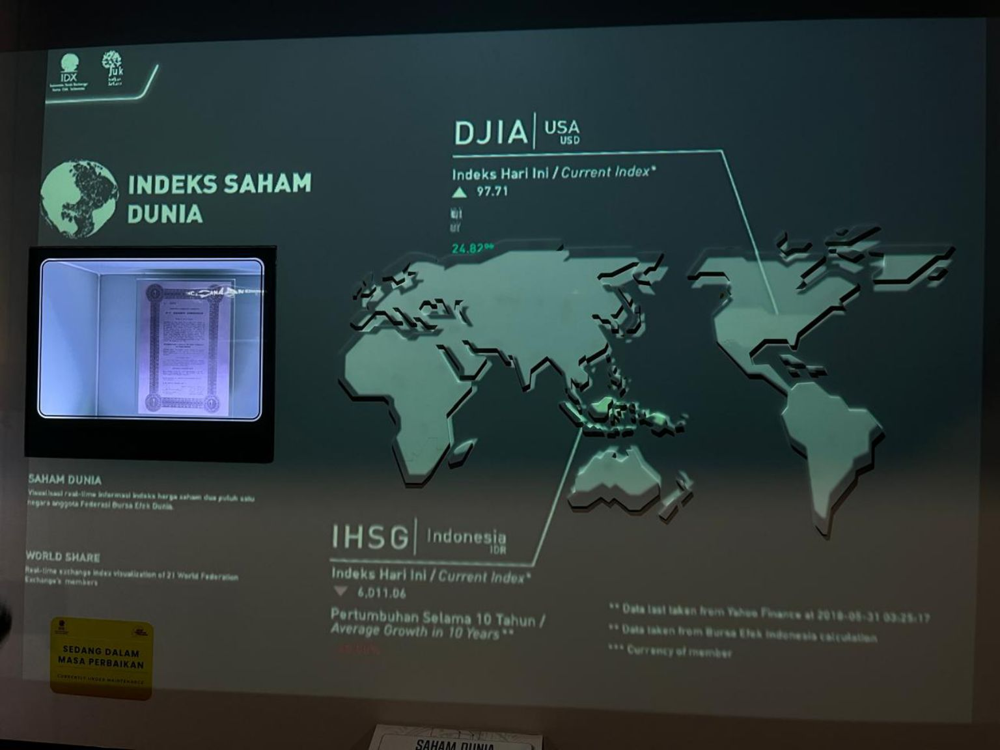
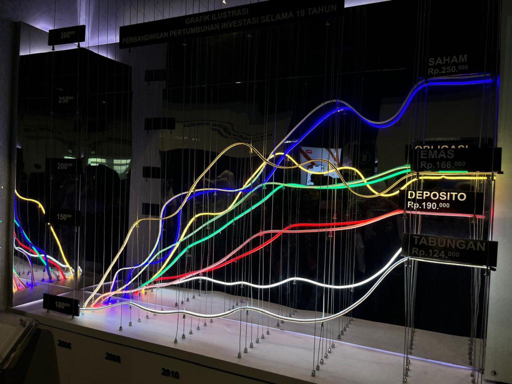
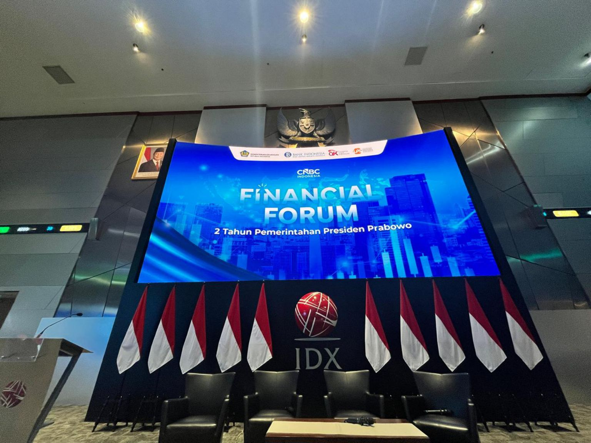
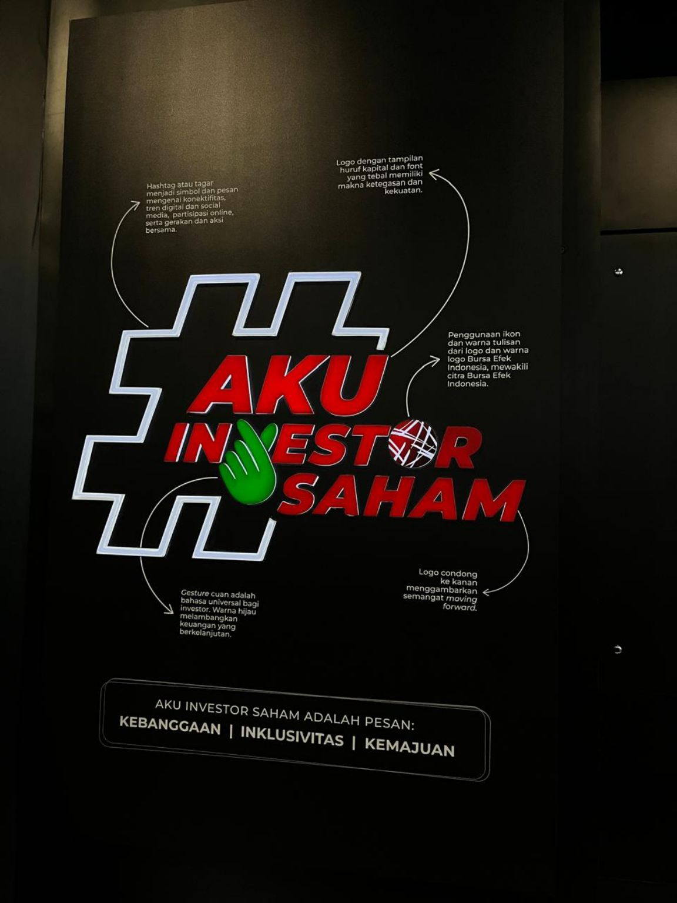

01
ARRIVAL & OBSERVATION
Mengenal lingkungan BEI
Memulai dokumentasi dengan mengamati area gedung Bursa Efek Indonesia dan suasana di dalam lingkungan bursa.
DIGITAL DOCUMENTATION / 19 NOVEMBER 2026
A closer look at Indonesia's capital market through an industrial visit to the Indonesia Stock Exchange.

Bursa Efek Indonesia (BEI), atau Indonesia Stock Exchange (IDX), merupakan penyelenggara pasar modal di Indonesia.
BEI menyediakan sistem dan sarana yang mempertemukan pihak yang membutuhkan pendanaan dengan pihak yang memiliki dana untuk berinvestasi. Melalui pasar modal, masyarakat dapat mengenal berbagai instrumen investasi dan aktivitas perdagangan efek.
Kunjungan ini menjadi kesempatan untuk melihat lebih dekat lingkungan bursa serta mengenal informasi pasar modal melalui media edukasi yang tersedia.
Visit official IDX website ↗Tempat berlangsungnya kegiatan penawaran dan perdagangan efek.
Menyediakan sistem dan sarana untuk mendukung perdagangan efek.
Mendorong pemahaman masyarakat mengenai investasi dan pasar modal.
Catatan kegiatan disusun berdasarkan dokumentasi foto yang tersedia. Urutan ini merupakan pengelompokan momen, bukan jadwal resmi acara.
Memulai dokumentasi dengan mengamati area gedung Bursa Efek Indonesia dan suasana di dalam lingkungan bursa.
Melihat media visual yang menampilkan indeks saham dunia dan informasi terkait pergerakan pasar.

Mengamati ilustrasi perbandingan pertumbuhan investasi sebagai pengenalan bahwa setiap instrumen memiliki karakteristik yang berbeda.

Mengabadikan suasana ruang utama, panggung, dan area kegiatan yang terlihat selama kunjungan.

Menemukan materi visual tentang investor saham, Bursa Karbon Indonesia, serta informasi sejarah dan perkembangan bursa.

Sepuluh potret yang merekam suasana, informasi, dan detail yang ditemukan selama kunjungan industri.
Video dokumentasi berdurasi 60 detik yang merangkum keseruan kunjungan industri ke Bursa Efek Indonesia. Saksikan momen dan pengalaman kami mengenal dunia pasar modal secara langsung.
Kunjungan industri ke Bursa Efek Indonesia memberikan pengalaman belajar di luar lingkungan kelas.
Dari dokumentasi yang diperoleh, saya dapat mengenal lingkungan pasar modal, melihat informasi indeks saham, serta menemukan media edukasi mengenai investasi dan perkembangan bursa. Pengalaman ini membantu saya memahami bahwa kegiatan ekonomi dan teknologi saling berkaitan dalam mendukung penyebaran informasi dan aktivitas pasar.
Sebagai siswa XI RPL, saya juga melihat bahwa penyajian informasi secara digital memiliki peran penting. Website ini menjadi bentuk dokumentasi sekaligus latihan untuk mengolah pengalaman menjadi media informasi yang terstruktur, menarik, dan mudah diakses.
“Pengalaman menjadi lebih bermakna ketika kita tidak hanya melihat, tetapi juga berusaha memahami.”